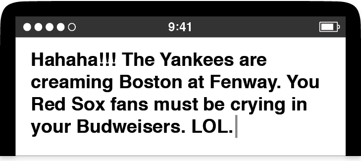

Convergence was the term we used to describe the final phase of making an Apple product, after the features had been locked down and the programming and design teams spent the last three or four months fixing bugs and polishing details. Entering a convergence period was the moment we had a clear picture in our minds about how we wanted our finished software to work. It also meant that the hardest part was over—we had been largely successful in navigating the course from idea to product.
I wasn’t there yet with the keyboard. While convergence feels like a steady march to a known destination, the days around the discovery of always-on autocorrection felt more like driving a car on a highway without any signs telling which exit to take. We were still around nine months away from the convergence period for Purple, and I was busy tuning the keyboard layouts, improving the autocorrection algorithms, updating the dictionary with new words, speeding up the software, dealing with the small-scale successes and setbacks, and addressing feedback from the previous demo while preparing for the next one. I tried to keep my development moving forward, but I was never completely sure if the route I was on was the right one.
Then, whoa! A nasty autocorrection surprise sent me careening off a virtual cliff during a demo.
A few days after the Giggly Demo, when Richard first experienced the unanticipated typing accuracy possible with always-on autocorrection, I joined Henri Lamiraux in his office to give Scott Forstall a chance to try the software for himself. I set up my demo, a Wallaby tethered to a Mac, on a side table next to Henri’s desk. Scott came in, sat down, picked up the Wallaby, and typed a little. I hovered over his shoulder as he tapped out his first few words. He was impressed. So far, so good. I used this opportunity to give Scott my pitch in favor of full-time autocorrection. I told him this would be how we’d deliver a great typing experience for Purple, how it would be the solution for all the problems that had plagued the derby-winning keyboard, and how it would steer us clear of the Newton’s reputation for subpar text entry.
DOONESBURY © 1993 G. B. Trudeau. Reprinted with permission of ANDREWS MCMEEL SYNDICATION. All rights reserved.
The Doonesbury strip that summed up the Newton handwriting recognition experience.
As Scott listened, he picked up on my Newton reference, and he decided to have some fun, channeling an iconic Doonesbury cartoon.
He grabbed the Wallaby and started typing, grinning as he tapped away, and when he looked up to see how my new keyboard code had done, his smile turned to laughter. When I saw the screen, I didn’t think it was so funny.
I was well versed in Newton lore. I knew exactly what Scott meant to type. He wanted egg freckles, but that’s not what he got. My keyboard botched it.
Scott thought this was hilarious, but he soon turned serious. He said my new software looked promising, but he needed to know that I could make it more consistent. He asked me if I could preserve the useful autocorrections but banish the ridiculous ones, the sort that might evoke the faulty handwriting recognition of the Newton.
I didn’t know, and I said so. My confidence had been shaken by this unintentionally amusing demo, and despite my belief in my pitch about the potential of always-on autocorrection, I couldn’t say how often my keyboard code might miscue. I suggested that I should start by finding out what went wrong in this particular case, and I left Henri’s office shaking my head in frustration. The most embarrassing demos always seemed to happen when I showed my work to Scott.
I soon discovered the problem. Scott couldn’t type “egg freckles” because two dictionary errors had compounded one another. The first was a bug in the metadata I assigned to every word in the dictionary, something I called the usage frequency value. This was a measure of the popularity of a word in normal text. For full-time autocorrection to work well, the code had to help people type all the most common words in English: the, and, have, from, will, and so on. The software had to know which words were more popular than others—for example, that it’s more likely for people to type “good” than “goof.” Hence, “good” had a higher usage frequency value than “goof.” The word “the” had the highest value of all, since it’s the most common word in the language. As the dictionary editor, it was my job to slot every word into a usage frequency value spectrum and give more popular words higher values than those used less often. The keyboard also had to help with everyday words like “egg,” one of the top few thousand in English (right up there with “bacon”). Indeed, Scott should have gotten help typing “egg,” and he would have, but for one problem: The usage frequency value for “egg” was mistakenly low, so low that the value for the relatively rare word “eff”—the spelled-out first letter of a not-nice word—was higher. This was a simple glitch in my dictionary data, and finding this bad usage frequency value was the end of the investigative trail. I sighed, fixed up the value for “egg,” and muttered “eff” a few times under my breath as I did it.
What about “freckles”? It wasn’t in the dictionary at all. I can’t explain it. Since the keyboard saw “freckles” and couldn’t find a matching dictionary entry, my code didn’t think “freckles” was an English word. So, the autocorrection code swapped Scott’s typing to a word that was in the dictionary: grackle, the common North American bird, Quiscalus quiscula.
Was there a deep lesson to learn from this “eff grackles” demo? At that point, I wasn’t sure. Bad demos like this could be fixed and improved, but this incident gave everyone pause, including me. As promising as it seemed, we wondered whether keyboard autocorrection would ever be reliable enough to ship in a product and whether the sum of all the small fixes I might make would ever equal something greater.
Here’s the rub. My autocorrection software had to get good at selecting between two options: switching your typing to the word that seemed most likely given your taps—what you might have meant—or keeping the exact succession of letters you tapped and saw pop up in the user interface—what you actually did. The keyboard had to make a what you meant versus what you did choice whenever you tapped the space bar at the end of a word. I had to teach autocorrection to make this choice well. At the same time, I had to avoid the bizarre results that might make people mistrust the software, since that might lead them to doubt their ability to type text on the touchscreen keyboard and perhaps might cause them to avoid buying our smartphone altogether—just like what happened with the Newton.
As I thought about the what-you-meant-versus-what-you-did question for the keyboard, I had two issues. The first was raising the quality of the dictionary—I needed better data. The second was making full use of all the touch input and language information I had available—I needed better algorithms. I focused on better data and better algorithms as separate tasks, hoping that the distinct threads of improvement would wind together in the end, resulting in a keyboard that accurately matched the words people intended to type while avoiding comical errors.
The “eff grackles” demo highlighted the importance of having good-quality data. There was nothing wrong with my algorithms in that session with Scott. The fault was with the dictionary. To fix this, I had to make sure everyday words like “egg” had proper usage frequencies, and I had to carefully adjust the values of similarly spelled words, especially those words with letters that are close to each other on the QWERTY keyboard, like “tune” and “time.” Since missing words like “freckles” could lead to absurd mistakes, I also reviewed the dictionary for its coverage of the most common several thousand English words.
As everyone on the Purple hallway used the software day in and day out, we made surprising discoveries about what the autocorrection dictionary should contain. We found we had to add a complete collection of hate speech to the dictionary and explicitly mark those words to prevent the software from ever offering them as autocorrections—imagine trying to type “nugget” but narrowly mistyping the first vowel or the last consonant. We didn’t want to offer racial epithets as a “helpful” aid, and we resolved that we would never provide software assistance for attempts to slur or demean.
My Purple teammates also let me know about the words they thought were missing from the dictionary. Over time, I decided many different data sets merited inclusion: sports team and stadium names, city names, product names, chat slang, abbreviations, and more. The autocorrection dictionary was less an academic linguistics exercise and more a catalog of contemporary life. My Purple colleagues wanted to type the words that came up in their typical day, in their typical speech, and in their typical texting taunts of friends while watching ballgames on TV:

Making the autocorrection dictionary was an easy-to-understand task in theory, even though it was difficult to perform in practice. It’s true that I had never engineered a large data set like this before in my career, but the concept was free of mystery. Good dictionaries are built one word at a time. This had a familiar ring to it. It was much like filling in all the cross-references during the early days of building Safari. Like the long slog of placating the compiler as it repeatedly reported errors about missing cross-references, the hard part of making a dictionary was the sheer size of the task. Yet heading toward the finish line was straightforward. Just keep tuning usage frequency values. Just keep adding words. Just keep going.
Developing the algorithms for autocorrection was different. At the kick-off of the keyboard derby, I had no idea how to make useful algorithms to assist people with text entry. Even when I had progressed through to the single-letter QWERTY keyboard layout, my autocorrection code was still extremely simple. It worked something like the tumblers on a bike lock.
If you meant to type the word “cold” but typed colf instead, you could imagine how spinning the fourth tumbler to a different letter would produce the desired word. This is a basic concept behind autocorrection, finding the best combination of letters given the taps from a typist, the keys that popped up, and considering the letters in the neighborhood of the popped-up key. Since the letter D is close to F on the QWERTY keyboard, the code could autocorrect from colf to cold.
The algorithm created an arrangement of tumblers corresponding to the keys you typed and the letters close to the keys you typed. Then the code whizzed through every possible combination of letters to see if any was a word. Of course, multiple words could be possible for most key sequences, and this is where the usage frequency value in the dictionary data came into play. The algorithm worked like this:
- Arrange typed letters in a set of tumblers with their neighboring letters.
- Spin the tumblers to check every letter combination.
- Note the dictionary words found by spinning the tumblers.
- Suggest the found word with the highest usage frequency value.
I originally developed this algorithm for my derby winner, and it performed well when the keyboard had multiple letters per key. It also was a good solution when all of us on the Purple team were novices with touchscreen typing. Months later, when the single-letter QWERTY keyboard layout replaced the derby-winning design, and everyone started making more typing errors per word since the keys were so much smaller, the simple tumbler approach to autocorrection was no longer sufficient. It could reliably handle one misplaced letter in a common word, as in my colf to cold example, but it was less good at figuring out what you meant when you typed something like vild—was the intended word “cold,” “bold,” or “vile”? I didn’t have a good idea for how to answer that question, so I didn’t have a good idea for improving the bike lock tumbler code I had. I went looking for help.
Asking for assistance presented a problem of a different sort. I found out the names of some people at Apple who had experience building dictionaries and creating algorithms for text entry, but they weren’t disclosed on the Purple project, and there was no way to get them clued in on the big smartphone secret. Back in these times, Steve Jobs himself was still playing some role in who got to sign the Purple NDA, and there was no formal system to request disclosures for new people. For good or for bad, that’s not how the Purple project rolled. So, I wound up in the odd situation where I got approval to ask for help, as long as I didn’t tell the people I was asking exactly why I was asking or what I planned to do with their answers.
This didn’t present as big a roadblock as it could have. The Apple text experts I spoke to didn’t seem overly distracted by my need for cloak-and-dagger-style confidentiality. They introduced me to concepts like Markov chains, conditional random fields, Bayesian inferences, and dynamic programming.
In the end, these tech talks inspired me more than they directly informed my algorithms. Honestly, much of the math they described was beyond me. I’m not an engineer by training—in fact, I never took a single math course in college. If there ever was an argument that I should have kept studying the subject beyond high school because there was no telling when I might need it, this was it. I was in over my head.
Yet I wasn’t completely lost. When Richard Williamson joined Apple and helped us determine the technical direction for our web browser project, he showed that it was possible to make technical headway by skipping past the problems he couldn’t solve in favor of those he could. So, that’s what I did.
I started by imagining a picture of my single-letter QWERTY keyboard, and I made a guess about the way I might miss a key I was aiming for.
I supposed that if I wanted to tap the G key but missed it to the left and tapped the F key instead, I probably meant G or F more often than I meant H. In other words, if I missed the exact key I was aiming for, the one I intended to tap was most likely the next closest key, not some other key farther away. I built the direction of these misses into my algorithm.
The tap shown popped up the F key, and from its position, and a guess about what the typist intended, it seems more likely that if the typist didn’t actually mean to type the F key, then G was probably more likely than any other key.
I also discovered how important it was to give an extra weighting to the keys that actually popped up in the user interface. During the keyboard derby, we learned that the visual of the key appearing under your finger when you tapped was the keyboard’s way of telling you what it saw. It was exactly the kind of feedback that can connect people and software. The letter pop-ups on the keyboard created a dialogue between the device and the typist, with the pop-ups playing the role of a backchannel, much like the head nods and “uh-huh” and “mm-hmm” utterances we sprinkle through conversations while we listen to other people speak. The stream of pop-ups let a person know the keyboard was following along, that it was listening.
The information about individual touches was also important to track, so I developed a system for scoring every tap, but it didn’t take too long to see that letter-by-letter grading didn’t produce better results than just looking at the usage frequency values. How did I know that? I lived on the software. I gave demos to my Purple teammates and they told me. Yet introducing a second level of scoring to the autocorrection algorithm seemed like a step ahead in concept.
Next I tried a more holistic scoring approach based on entire words. Rather than evaluating each touch as an individual event worthy of its own score, I grouped all the taps together. I imagined what a series of keyboard touches to type a word would look like as a picture, a geometrical pattern, a key-tap constellation.
Touches to type the word “blog” form a key-tap constellation, a pattern of touches superimposed on top of the letters on the keyboard.
To make productive use of this concept, I imagined the flawless patterns a superhumanly accurate typist would create with a Wallaby in hand. I pictured asking such an ideal typist to run through the entire dictionary, to type out a full set of error-free, perfectly centered patterns. The resulting collection of constellations would be made of dots positioned in the exact center of every key for every letter for every word in the dictionary.
In my mind, autocorrection became a process of building a pattern from the user’s taps and searching the dictionary for the closest-matching pattern from the ideal set. Stated differently, given a keyboarding constellation from a typist—which would inevitably contain noncenter strikes and perhaps some erroneously tapped keys as well—the algorithmic task became finding the keyboarding constellation that looked most similar to the one a superhuman typist would type. The dictionary word corresponding to that ideal constellation would be the word the user meant to type . . . in theory.
To test this, I had to figure out a way to compare these keyboarding patterns to each other. As before, when I did a cursory examination of mathematics texts, I couldn’t make sense of data fitting or graph matching techniques that looked something like what I needed. I was unable to understand the formulas and explanations. I was in over my head, and again, I had to think of something simple.
I imagined how much I would need to “nudge” each of the dots in a picture of a typing pattern to make it look exactly like one of the ideal patterns from the dictionary. For each pattern comparison, I added up all the nudges. The closest match was the one that required the fewest nudges. Luckily for me, calculating these nudges was elementary school stuff. It was like getting a map of a grid layout for a city and counting the number of streets and avenues I would need to walk to get between two addresses, a measure sometimes called a Manhattan distance.
This is what my nudges were, a counting up of the geometrical skew required to move a tap a typist made until it matched a dot in a dictionary pattern. A big sum of nudges was a big amount of skew, and indicated a poor match. A small number of nudges indicated a small skew, and was a good match. I gave a name to this operation of comparing patterns and summing nudges: the pattern skew algorithm.
It takes eleven “nudges” on streets and four on avenues to get from point A to point B on this map of Manhattan. Fifteen nudges in all.

The pattern for a person trying to type the word “blog.”
The ideal pattern in the dictionary for “blog,” with perfect center-strike touches on all the keys.
When the two are overlaid, it shows how a little nudging is necessary to make the pattern for the typing look like the ideal one from the dictionary, but not too much. This is a pretty good match.
You can see the ideal pattern for the word “blot” is the same as the one for the first three letters, but would require a whole lot more nudging for the last letter. The match for “blot” isn’t as good as the one for “blog,” hence I assumed the typist meant the latter word rather than the former.
As a person typed on the keyboard, the pattern skew algorithm whirred away in my autocorrection code, building patterns, nudging taps, and comparing touches to words in the dictionary. The output of the pattern skew algorithm was a list of dictionary patterns that looked most like what the typist did, and, of course, since each dictionary pattern represented a word, the algorithm also suggested the words the typist most likely meant. By joining up the pattern skew with the usage frequency values, the autocorrection algorithm became this:
- Arrange typed keys in a set of tumblers with their neighboring keys.
- Spin the tumblers to check every letter combination.
- Note the dictionary words found by spinning the tumblers.
- Calculate the pattern skew for every found word.
- Multiply the usage frequency value for each found word with the reciprocal of its pattern skew.
- From all the found words, suggest the one with the greatest multiplied total of usage frequency and pattern skew.1
This was the final autocorrection algorithm. Making this “final” declaration sounds like progress, but as should be clear by now, at Apple in general, and on the Purple project in particular, there was always more to do. The initial feedback from my teammate users was positive—the pattern skew algorithm made it much easier to type accurately. Even so, I spent many additional months tuning and optimizing the nudge calculations to improve the typing experience.
As the pattern skew algorithm got better, other text-related tasks soon bubbled to the top of my to-do list. There was the matter of where all this keyboarding would go, the single-line text fields on cards in the Contacts app and the multiline text areas used in places like the Notes app. I wrote code for these user interface widgets, using my WebKit word processing work as the foundation. Dictionary updates were never completely off my radar, and I kept up with those, adding new Apple product names, such as Xserve, and smarts for automatically inserting an apostrophe into “cant” to turn the word into “can’t.”
I continued to improve the keyboard, and as the months passed, there were fewer and fewer absurd typing errors. Everyone started to get more optimistic about always-on autocorrection. As a feature, the keyboard started to converge. I started getting close to a typing experience Apple could ship in a product.
While I was focused on the keyboard, everyone else on the Purple team had gone through their own periods of development and discovery. Many of these struggles remained invisible to me, because I was so focused on my own difficult work and because of the compartmentalized security mandated by Steve. I know almost nothing about how we developed our phone hardware, the details of the industrial design process, or the negotiations with phone carriers.
When it came to software, I know more, and I was always trying out the work my colleagues were doing, filling the feedback role for them that they played for me with the keyboard.
For example, with MobileSafari, the Purple web browser, pages often appeared tiny when we displayed them to fit the entire screen of our smartphone. It would have been nearly impossible to tap links if your touches had to hit them exactly. So Richard Williamson and another colleague came up a scheme where tapping would spiral out from the exact point of your touch to find links. The closest was deemed the one you meant to activate.
We needed scores of these finely tuned allowances and affordances throughout our software to make our touchscreen operating system intuitive and easy to use.
Did we feel pressure to fill gaps like these in our system? Yes. I handled it by keeping reasonable and regular work hours. If I wasn’t battling exhaustion, I could bear up under the stress. At least most of the time. One day, I lost my temper at a colleague over a disagreement about how we should approach a keyboard-related technology problem at a time when the code was still in flux, and I shouted at him to “get the f*** out of my office!”
One other incident involves Kim Vorrath, who had the pressure-packed job of juggling our software delivery schedule and the ongoing risk assessments associated with our progress. One evening, in a fit of frustration, she slammed the door to her office so hard that the handle mechanism broke, marooning her inside. Why was she so upset? A sufficiently accurate answer is this: The daily grind of working on Purple. Some insignificant issue caused her to boil over. Scott Forstall busted her out by beating the doorknob off with an aluminum baseball bat.
Such drama was uncommon, for me, for Kim, and for the rest of us. Usually we kept the rate of our progress above the level of our stress, mostly because we hit few roadblocks that wouldn’t give way to a good idea.
Time passed, and by the autumn of 2006, our Purple software started to converge. We were getting closer to a software system Apple could ship in a product.
We headed toward the holiday season. I was busy in my office one day when everyone on the Purple hallway got called for an impromptu group meeting. This time Kim was the one asking us to gather, and it wasn’t because she wanted us to stop what we were doing so she could kick off another all-hands-on-deck, problem-solving tech derby.
No, this time, she had something to demo herself. I walked down a few doors past Henri’s office to an open area with comfy chairs and couches outside Kim’s office. A few others had heard the call when I did, and we all gathered around her.
She was holding a Purple phone. Untethered. No cable attached to a Mac. The real industrial design. An actual glass screen, not the plastic display of a Wallaby. I had never seen one of these before, and this wasn’t a mere model either. It was a working phone. The hardware was powered up and running with all our software loaded onto it. As Kim handed around this late-stage prototype, she pointed out that there were one or two hardware components that weren’t final yet, and since they were slightly bulkier than the parts we would manufacture at volume, the top and bottom of the case didn’t meet on the lower left corner of the demo device. There was a little gap, maybe two or three millimeters. The Purple phone was converging, but it wasn’t completely converged yet.
When Kim passed the prototype to me, she asked me to handle it gingerly. I took it from her. The glass display was striking—far brighter and sharper than the Wallaby screen we’d been staring at for more than a year. I turned the device over in my hand. It felt solid, like it was filled to the brim with the latest technology, and it was. In fact, at that moment, it was overflowing a bit.
I paced back and forth a few times to feel the freedom of movement that came with untethering from a Mac. The Wallaby experience had been about feeling tied down to a computer on a desk with cabling spidering out everywhere. Now, for the first time, as I put the phone in my pocket, I got an idea of what it would be like to use a Purple phone.
Naturally, I was most interested in the keyboard. I typed out a few words in the Notes app. The keyboard worked without a hitch. My autocorrection code stepped in to fix all the mistakes I made. I could have spent all day with the device, trying out everything I could think of, but other people were waiting for their turn. As I handed the device over, I had no question in my mind.
I wanted one.
With this memorable demo, it was obvious we were converging on a smartphone Apple could ship as a product. We were close, but, as with the hardware enclosure that wouldn’t quite snap shut, we weren’t there yet. In a few more weeks, we would have to be.
The announcement date was already on the calendar, and we’d been heading toward it for much of the previous year. The release plans converged along with the progress of the software and hardware. Apple would tell everyone about Purple at the Macworld conference in early January 2007, and the company would ship the first phones the following June.
This meant I would still have time to fix a few more bugs and add a few more words to the dictionary before people got their hands on the keyboard. Security remained tight up until the last moment, and when I walked into the Moscone Center on keynote day, I still didn’t know what Purple would be called. On the tenth of January 2007, the day after the big product introduction, I edited the autocorrection dictionary to add a new word: iPhone.
* * *
Every part of working at Apple could be stressful, and though we only rarely beat down doors with baseball bats or ended conversations with shouted four-letter words, once we entered a convergence period, we started dealing with a persistent product development pressure generated by two opposing forces. One was the constant ticking away of time as we moved closer to an unmovable ship date; the other was the variable and ever-changing number of bug reports representing software problems that needed to be fixed.
We used a program called Radar to monitor our bugs, and this flexible, internally developed bug tracker was like our convergence Swiss Army knife. Radar’s main purpose was for reporting software defects and tracking their fixes, but a Radar entry could also play other roles in our development organization: an engineer’s to-do item, a designer’s enhancement request, a project manager’s top-level feature with many subfeatures attached to it, or an executive’s high-priority issue.
Radar moved to the center of attention once we entered convergence, several months out from the scheduled ship date. Our managers would start watching the number of Radars more closely, and the count was supposed to begin a steady descent toward zero. During convergence, Henri sent out a graph every morning to everyone on the Purple software team, where he plotted Radar bugs against dates, with the release date at the right end of the x-axis. Over time, the meanderings of the daily bug counts drew a squiggly line: More bugs made the line go up, fewer made it go down. We got good at reading this convergence line and taking the temperature of the project through it. We learned to understand convergence behaviors, like the upward spikes in the line after big demos, which weren’t as worrisome as they seemed—many demo bugs would be quick and easy to fix—and the stubborn flat lines over many days, which could indicate real trouble, since the number of incoming bugs was matching our fix rate, and that meant convergence might be stalled.
Don Melton often told a story about convergence at Netscape. When his old company was getting ready to ship versions of the Navigator web browser, the goal wasn’t zero bugs. Netscape’s engineering leaders knew that no sophisticated piece of software was ever truly devoid of defects. Instead, they shot for zarro boogs, an intentional mispronunciation of “zero bugs.” It was a humorous recognition that they were calling their project “finished” on the ship date, not that they had actually achieved the unattainable ideal of fault-free code, regardless of what a bug database query or a convergence graph might have shown them.2
This relationship between bug fixes and release dates raises a question. If convergence was the primary focus of the Purple team in the last few months before the iPhone was announced, does convergence methodology explain why the iPhone turned out so well?
No. Convergence isn’t magic. It’s a workaday high-tech development practice. Netscape’s engineers did bug convergence. It’s also what Don and I were doing during our last few days at Eazel, right up until the morning they fired the majority of the staff. Everybody in professional software development does convergence. So, converging a bug list toward zero can’t be the elusive ingredient necessary for making excellent products.
The appeal of the iPhone wasn’t the result of piling up a bunch of features early on in our project development schedule, opening the requisite number of bugs to track the implementation of those features, and then converging, fixing them one by one as the schedule led us to ship date. Bug squashing might help to make a decent product, but it’s not the secret for making a great one.
I’ll soon share more of my ideas about what made our Apple approach special, but first, I’ll discuss a counternotion, an example of a process that can’t produce iPhone-like excellence. For this I turn to Douglas Bowman, a designer with a résumé that includes stints at Twitter and Wired. He also started at Google in 2006, becoming one of its early visual design leaders.* Here’s how he justified his departure from the web search firm almost three years later:
Without a person at (or near) the helm who thoroughly understands the principles and elements of Design, a company eventually runs out of reasons for design decisions . . . Without conviction, doubt creeps in. Instincts fail . . . When a company is filled with engineers, it turns to engineering to solve problems. Reduce each decision to a simple logic problem. Remove all subjectivity and just look at the data. Data in your favor? Ok, launch it. Data shows negative effects? Back to the drawing board. And that data eventually becomes a crutch for every decision . . .
Yes, it’s true that a team at Google couldn’t decide between two blues, so they’re testing 41 shades between each blue to see which one performs better.3
Forty-one shades of blue sounds like a lot, but if they were willing to go that far at Google, why not test for a hundred or a thousand? If some data is good, more must be better, right? As Bowman suggests, it isn’t.
In this kind of test, commonly referred to in the high-tech industry as an A/B test, the choices are already laid out. In this Google pick-a-blue experiment, the result was always going to be one of those forty-one options. While the A/B test might be a good way to find the single most clickable shade of blue, the dynamic range between best and worst isn’t that much. More important, the opportunity cost of running all the trials meant there was less time available for everyone on the development team to dream up a design that people might like two, or three, or ten times more. A/B tests might be useful in finding a color that will get people to click a link more often, but it can’t produce a product that feels like a pleasing and integrated whole. There aren’t any refined-like responses, and there’s no recognition of the need to balance out the choices. Google factored out taste from its design process.
At Apple, we never would have dreamed of doing that, and we never staged any A/B tests for any of the software on the iPhone. When it came to choosing a color, we picked one. We used our good taste—and our knowledge of how to make software accessible to people with visual difficulties related to color perception—and we moved on.
Or did we? Well, yes and no. We always made quick choices about small details, but we were always willing to reconsider previous decisions. We took more time with bigger questions, but never too much. We were always mindful of making steady progress. I certainly absorbed this lesson from the earliest days of Safari development, when Don and I were in our six-week funk and Richard produced his two-day demo to shake us out of it. Maintaining headway toward a goal was a key part of the way Apple did software development. It’s fair to say we were always in a convergence period of a sort, even though we didn’t think of it in that way. Yet our forward movement always had a destination. We were constantly converging toward the next demo.
The concrete and specific demos I described in chapter 6 were catalysts for creative decisions. They forced us to make judgments about what was good, what needed changes or improvements, and what should be deleted. We habitually converged on demos, then we allowed demo feedback to cause a fresh divergence, one that we immediately sought to close for the follow-on demo.
The next demo was never far away, and often it was quite close. In the case of the Giggly Demo for Richard, it took me mere minutes to edit the code to turn on full-time autocorrection. We were continuously producing fresh rounds of software like this, to test our latest ideas and assumptions. As a whole, a succession of demos, feedback, and follow-up demos created a progression of variation and selection that shaped our products over time.
It’s a Darwinian process, and not surprisingly, Charles Darwin himself was unequivocal about the potential and power of adding up incremental modifications down a line of generations. In the first chapter of On the Origin of Species, before he introduced his then-radical concept of natural selection, Darwin began with a lengthy discussion of artificial selection, building on the familiarity his nineteenth-century audience had with animal husbandry:
But when we compare the dray-horse and race-horse, the dromedary and camel, the various breeds of sheep fitted either for cultivated land or mountain pasture, with the wool of one breed good for one purpose, and that of another breed for another purpose; when we compare the many breeds of dogs, each good for man in very different ways . . . we must, I think, look further than to mere variability. We cannot suppose that all the breeds were suddenly produced as perfect and as useful as we now see them; indeed, in several cases, we know that this has not been their history. The key is man’s power of accumulative selection: nature gives successive variations; man adds them up in certain directions useful to him . . . It is the magician’s wand, by means of which he may summon into life whatever form and mould he pleases.4
As best we could on the Purple hallway, we sought to wield a similar magician’s wand to mold our products, building variation into our demos, keeping the strong aspects and discarding the weak, and making the next demo based on those decisions. With our Darwinian demo methodology, we had a huge advantage over artificially selecting breeders and the glacially slow accumulations of genetic improvements that drive natural selection. Working in software meant we could move fast. We could make changes whenever we wanted, and we did. We created new demos that were concretely and specifically targeted to be better than the previous one. We constructed Hollywood backlots around these demos to provide context and to help us suspend our disbelief about the often nonexistent system surrounding the feature or app that was the focus of our attention. We gave each other feedback, both as initial impressions and after living on the software to test the viability of the ideas and quality of the associated implementations. We gathered up action items for the next iteration, and then we forged ahead toward the next demo. I’ve given a name to this continuing progression of demo -> feedback -> next demo: creative selection.
As I’ve said elsewhere, we didn’t have a formal name for what we were doing while we were doing it. We were always so focused on the next demo, the next review session, the next time we were scheduled to show progress to Steve. Our iterative working method was like the air—something all around us all the time, something we were always aware of on some level, something it didn’t make sense to question. Yet we took our approach for granted more than we should have.
There are innumerable ways creative selection can become bogged down, since this working method must be applied consistently over a period of time to yield results. Consequently, our success was as much about what we didn’t do as what we did. Mostly we avoided falling into any of the typical product development traps common in Silicon Valley and that, I expect, occur often in other kinds of creative organizations and businesses.
For example, we didn’t take two-hour coffee breaks or hold daylong offsite confabs to talk about projects without examples to ground the discussion—we didn’t have lengthy discussions about whose imaginary puppy was cuter.
We didn’t shuffle around printed specifications or unchanging paper mock-ups for weeks on end, waiting for an epiphany that would jump us directly from an early-stage concept to a complete product design, hoping we could somehow flip the ratio of inspiration to perspiration Thomas Edison spoke about, the relationship between the time it takes to get an idea and the amount of hard work it takes to transform that idea into something real. I learned my lesson on this count, and in my Apple career, never again did I spend a week of my time to make anything like that fifty-step Building the Lizard document I described in chapter 2.
We didn’t have an imbalance between influence and involvement, where a senior leader might try to mimic the commanding role of Steve Jobs without the corresponding level of personal engagement. Detached high-level managers making all the key decisions is such a widespread affliction that it has its own internet meme, the Seagull Manager. It describes a top executive who is rarely around but flies in occasionally and unexpectedly from who knows where, lands on your beach, squawks noisily, flaps its wings all over the place, launches itself back into the air, circles overhead, drops a big poop on everyone, and then flies away, leaving the rest of the team to clean up the mess, figure out what it all meant, and wonder what to do about the inevitable follow-up visit.5
We didn’t establish large, cutting-edge software research departments sequestered from, and with a tenuous connection to, the designers and engineers responsible for creating and shipping the real products. Steve Jobs famously disbanded such an organization at Apple, the Advanced Technology Group, shortly after he reasserted control over the company in 1997.
These kinds of anti-patterns can prevent creative selection from functioning correctly, since they block the steady accumulation of positive change while developing a product. They’re not the only ways the process can break down. You could build and release products without ever living on them to see if they’re any good, as we did with Nautilus and our online services at Eazel. You could hold demo meetings and then adjourn them without deciding what to do next, a mistake that interrupts the chain of criticism that provides the logical connection from demo to demo. You could assign oversized project teams to the tasks one or two people could handle, a fault that can lead to muddled communications and a dilution of each person’s ability to make a difference. You could have conflicting lines of authority and fail to ever reach universally recognized final decisions. You could design for looks, or for fashion, or for some abstract ideal instead of designing for how a product works. You could stage A/B tests to help make simple decisions, as was done, apparently, to choose colors at Google.
We managed to steer clear of all such pitfalls. If I were to take a stab at explaining the why, I would say that our clarity of purpose kept us on track, in much the same way that Vince Lombardi won football games and Steve Jobs pushed us to make a speedy first version of Safari. Since our focus on making great products never wavered—if for no other reason than that’s what Steve demanded—perhaps concentrating keenly on what to do helped us to block out what not to do.
Whatever the explanation for how we got started, as we had success with creative selection, it became self-reinforcing. We evolved and improved our process as we produced good results with it. We took a page right out of Darwin, recasting his concepts to suit our product development goals.
We always started small, with some inspiration. We made demos. We mixed in feedback. We listened to guidance from smart colleagues. We blended in variations. We honed our vision. We followed the initial demo with another and then another. We improved our demos in incremental steps. We evolved our work by slowly converging on better versions of the vision. Round after round of creative selection moved us step by step from the spark of an idea to a finished product.
If I extend the Darwinian metaphor, then creative selection was supplemented by the selection pressures we created to help shape our progress from demo to demo, in the phase of deciding what to vary. From its beginnings, Apple always had a characteristic sense of what to select for, a viewpoint on which ideas were strong, and this helped to define the conditions under which the creative selection process unfolded. In the next chapter, I’ll describe this aspect of Apple-style product development in more detail.
Note
* Bowman started at Google around the same time we were in the Purple hallway at Apple, deep in development on the iPhone.